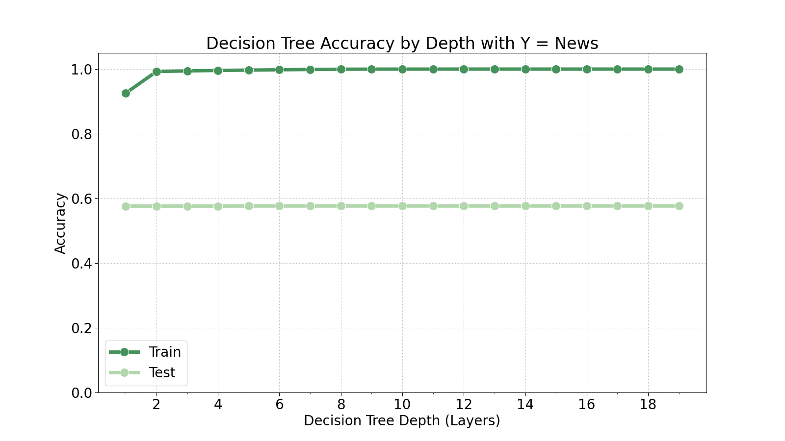
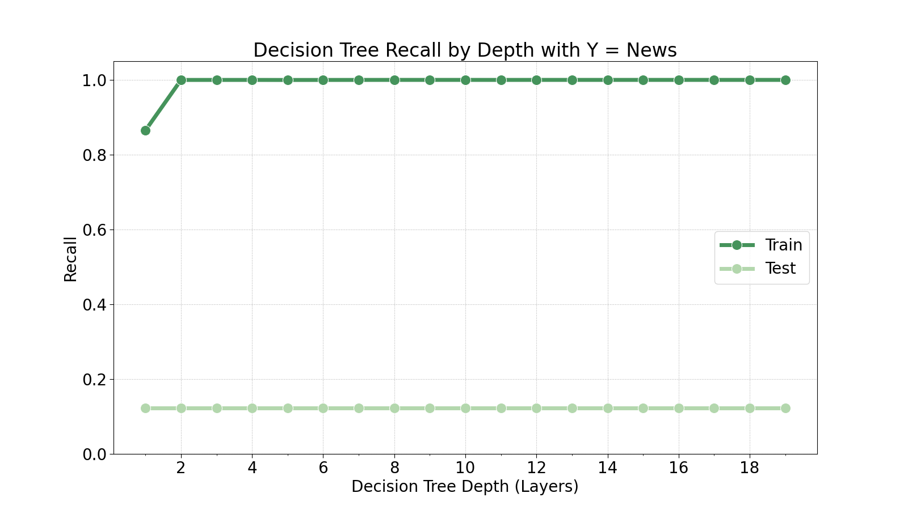
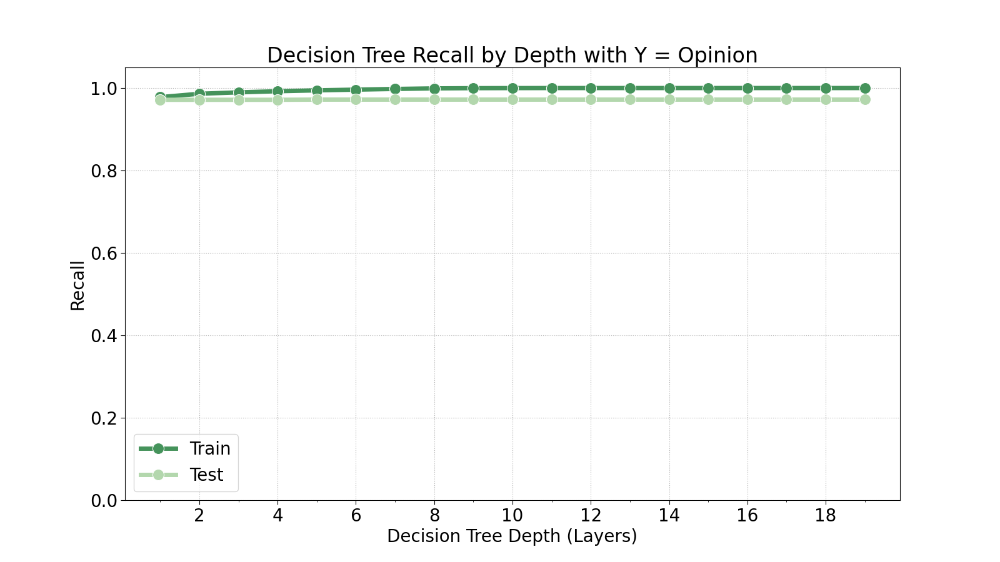
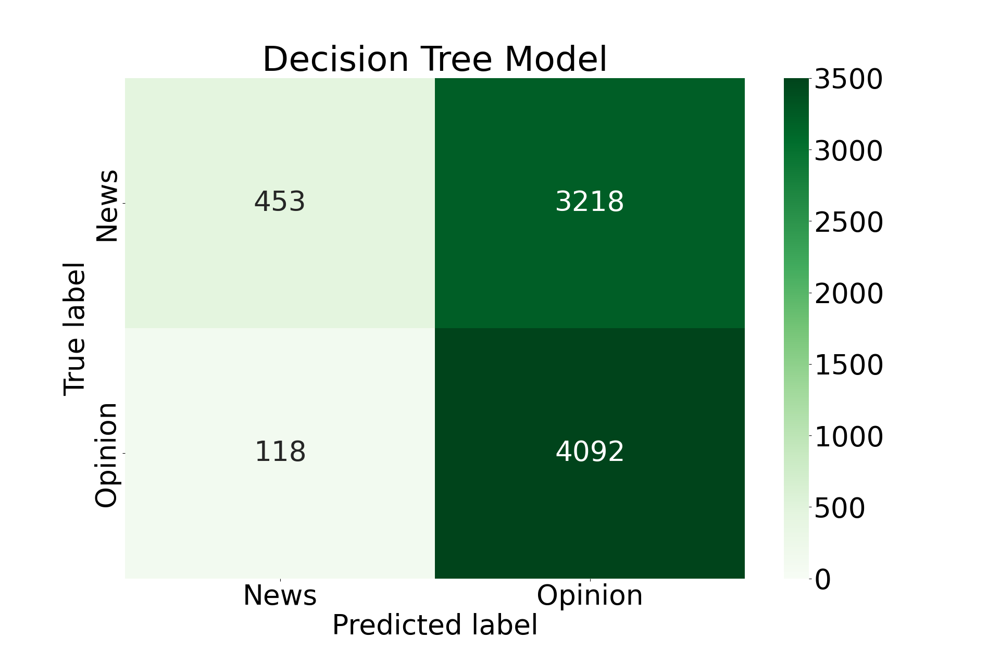

Decision Trees
Methods
Decision trees are a common machine learning technique for both classification and regression problems. In classification problems, we use data to make a prediction of discrete possibilities (for example, whether it will be rainy, snowy, sunny, or cloudy on a given day). On the other hand, in regression problems we use data to make a numerical prediction (for example, the high temperature for a given day). In this scenario, (as in the Naïve Bayes section of this project), we are dealing with a classification problem.
Decision trees identify patterns in the data to construct a hierarchical tree with a single "root node" at the top, and layers of nodes branching down into leaves. The leaf nodes are the end points in the decision tree and determine the classification of the given data.
For example, consider a decision tree designed to classify weather data. Suppose we have features such as the previous day's temparature, air pressure, humidity, or other features that may contribute to an accurate prediction of the next day's forecast. The root node may have a "decision" such as whether or not the temperature from the given input was greater than 70 degrees Fahrenheit. If the condition is met, we traverse left down the tree to the next node, or we traverse right if it is not met. This process continues until we reach a leaf node that finally declares the predicted label (sunny, rainy, etc.) for the given input.
Class Distribution
In this section, we take the same task as in the Naïve Bayes section of predicting whether a given tweet about a school shooting is expressing an opinion about the incident or conveying news about the incident. After we import our data, we check the balance of labels in our dataset:
| Count | Percentage | |
|---|---|---|
| Opinion | 16,944 | 53.7% |
| News | 14,580 | 46.3% |
As we can see, the data is very well-balanced, meaning the number of "Opinion" tweets is roughly equal to the number of "News" tweets. This is desirable for the algorithm results.
Feature Selection
Because we performed this analysis in the Naive Bayes section, there is no need for further feature selection or data preprocessing.
Model Tuning
We will now determine the optimal depth for the decision tree by training 20 decision trees at varying maximum depths.
  As we can see in the plots above, the test set generally does not improve with deeper decision trees. There is a slight improvement in recall of the opinion class at a depth of 5, but that is the only indication of improvement. Therefore, we will train the model at a maximum depth of 5.
Final Results
Using the maximum depth of 5, we train our final model.
Clearly there is a level of overfit in the decision tree model, even at a low maximum depth. Considering the hyperparameter tuning plots, it seems this is purely an issue with using decision trees for this specific problem. They do not seem to be well-optimized for the nature of this problem.
Conclusions
All in all, this analysis went poorly. No matter how much tuning we performed on the decision tree model, it was never able to perform accurate predictions of the nature of a given tweet. It tended to prefer predicting a tweet as an opinion tweet, even when it was not.
In the future, I would stick to Naïve Bayes algorithms for this kind of analysis.